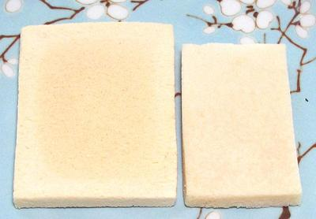

Dried-Frozen Tofu

[Koya-dofu, Kori-dofu (Japan); Freeze Dried Tofu (inaccurate)]
This is pretty much a Japan-only specialty. Some time between 1550 and
1650 Two traditional methods were developed, taking advantage of bitter
winter cold, but today this product is made in large industrial
facilities. First Soft Tofu is frozen, slowly to assure formation of
large crystals. It is than thawed and the water is wrung out, followed
by conventional drying. This process differs substantially from the
Vacuum Freeze Drying method used industrially for other products, thus
Dried-Frozen Tofu.
Formerly, much of it was treated with ammonia gas so it puffed up
better when soaked, but this has been almost totally replaced by a mix
of sodium and potassium salts called kansui. This produces a slightly
higher rise and avoids an ammonia odor in the product, though that
odor would be removed by the soaking step.
More on Varieties of Tofu.
Cooking
The dried tofu must first be soaked in warm
water for at least 10 minutes. After soaking it needs to be wrung
out, like squeezing a wet sponge. Now it has the taste and texture
of a stiff kitchen sponge. It than needs to be simmered, either in
a recipe or in preparation for a recipe, for at least 20 minutes.
Fully cooked, this Tofu has a unique texture, tender, but a bit
chewy with a somewhat meaty mouth feel. Its natural flavor is very
light, and it tastes sort of like tofu. It is generally expected that
it will absorb flavors from other ingredients it is cooked with.
If it has been simmered in plain water, as to prepare it for a stir
fry, wring it out again so it can absorb flavors.
Buying:
This product is available on the Internet,
and probably from sources catering to the Michio Kushi Macrobiotic
community. The photo specimens are Eden brand, made in Japan. The
package contained 6 squares, weighing a total of 56 grams (about 2
ounces). Cost was 2019 US $13.56 (with free shipping), or about $108
per pound. After soaking and simmering this would come to
about US $41.00 per pound for edible tofu (with water wrung out).
This brand includes only soybeans and nigari (magnesium chloride -
a coagulating agent). If it was made with kansui, it would puff up
a bit more, but the weight of solids would be unchanged.
Storing:
In a sealed package stored away from heat
and sunlight, this product should last 6 to 8 months.
Yield:
A dried square 0.25 inch thick became 0.31
thick after soaking and simmering. 2 ounces will become about 6.1
ounces after soaking and simmering (this is weight with water
wrung out).
bp_tofudfz 190124 - www.clovegarden.com
©Andrew Grygus - agryg@aaxnet.com - Photos
on this page not otherwise credited are ©
cg1 - Linking to and non-commercial use
of this page permitted